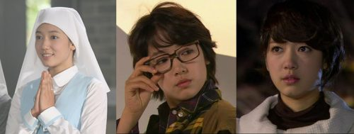
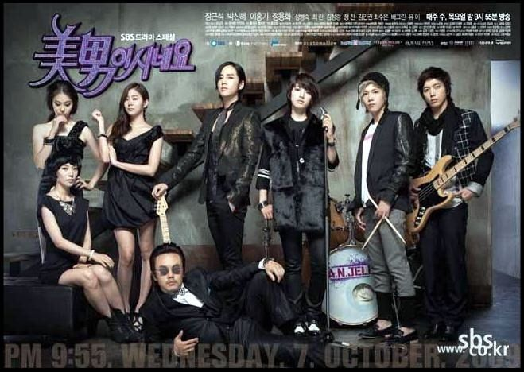
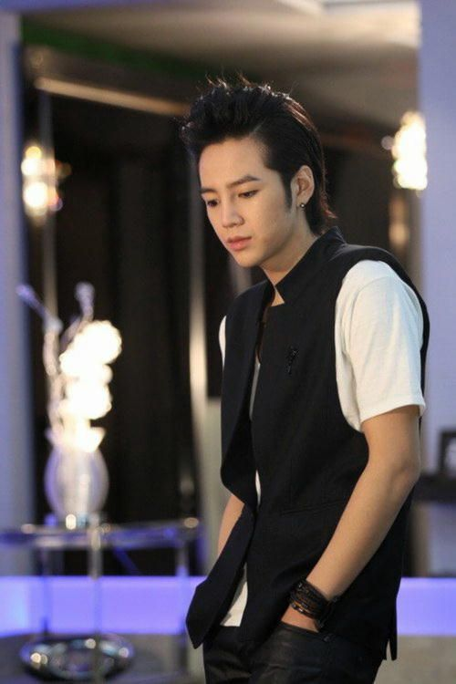

Mi Nyu (Park Shin Hye) (Gemma como la conocen en el convento) es una chica muy inocente que quiere
ser monja, ya que siempre ha vivido en un convento, en donde siempre se mete en líos sin querer. Go
MiNyu, tiene un hermano gemelo llamado Go Mi Nam, cuyo sueño es ser un cantante famoso para poder
conocer a su madre, ya que fueron abandonados en un orfanato al morir su padre.
Su hermano gemelo, Go Mi Nam (Park Shin Hye) pasa con éxito las audiciones para unirse al grupo
de música A.N.JELL, el grupo más popular de Corea, pero se ve obligado a viajar a Estados Unidos para
corregir un problema de salud con una cirugía plástica fallida. Mi Nyu recibe la visita del Mánager
de Mi Nam pidiéndole que se haga pasar por su hermano gemelo mientras él se recupera, para ayudar a
su hermano y no perder el contrato. Ella está en contra al principio, pero está de acuerdo con el fin
decumplir su sueño de encontrar a su madre, sin saber que en esa banda encontrará al amor de su
vida,creando enredos a lo largo de la serie, puesto que todos piensan que es un chico cantante de la
banda.

Ahora, haciéndose pasar por Mi Nam, Mi Nyu entra en el grupo enfrentándose a una constante lucha
tratando, de mantener oculta su verdadera identidad, la de ser en realidad la hermana gemela del
cantante seleccionado para el grupo. Esto le es difícil, puesto que tiene que convivir con los otros
3 miembros del grupo de música A.N.JELL, los cuales son hombres con personalidades totalmente opuestas
y diferentes entre sí: Kang Shin Woo (Jung Yong Hwa) el guitarrista de A.N.JELL, un chico solitario y
aun así maduro para su edad; Jeremy (Lee Hong Ki) el hiperactivo y alegre baterista de la banda y por
último el perfeccionista y obsesivo Hwang Tae Kyung (Jang Keun Suk), el líder y vocalista de A.N.JELL.
Al principio, a Tae Kyung y a Jeremy no les agrada Mi Nam, y Tae Kyung por su parte le hace la
vida difícil, en cambio Shin Woo es amable con ella. Tae Kyung descubre que Mi Nam es una chica y
amenaza
con revelar su secreto, Shin Woo también la descubre, pero no lo revela y va desarrollando sentimientos
por ella, a lo largo de la serie.La historia sigue su vida lejos de las cámaras y la publicidad del grupo de música, los esfuerzos
de Mi Nam para mantener su secreto.

Su vida se hace más difícil por el odio inicial de Tae Kyung hacia
ella; y para él por la actriz malvada Yoo He Yi, a quien le gusta Tae Kyung. A medida que la historia
avanza, Jeremy se encuentra luchando con el desarrollo de sentimientos negativos hacia Mi Nam, ya que no
sabe nada de que Mi Nam es una chica. Shin Woo cae más y más profundamente enamorado de Mi Nam también.
Sin darse cuenta los tres se han enamorado de la misma chica.
| Park Shin Hye como Go Mi Nam (Hombre) / Go Mi Nyu (Mujer). | Jang Keun Suk como Hwang Tae Kyung. | Lee Hong Gi como Jeremy. | Jung Yong Hwa como Kang Shin Woo. |
|

|
|||
| como Go Mi Nam (Hombre) / Go Mi Nyu (Mujer). | como Hwang Tae Kyung. | como Jeremy. | como Kang Shin Woo. |
te gustaria ver como se prepara una lasaña